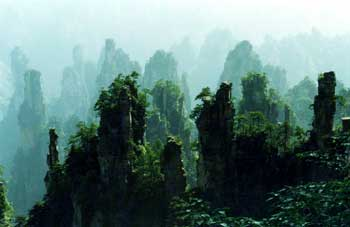

|
张家界国家森林公园：中国第一个国家森林公园，境内峰奇岩险，谷深涧幽，水秀林碧，云缭雾绕。集雄、奇、幽、野、秀于一体，汇峰、谷、壑、林、水一色。
张家界国家森林公园，有三千多座奇峰异石，似人似物，神形兼备，或粗犷，或细密，或奇绝，或诡秘，浑朴中略带狂狷，威猛中又带妖媚，危岩绝壁，雍容大气。
张家界集山奇、水奇、石奇、云奇、动物奇与植物奇六奇于一体，汇秀丽、原始、幽静、齐全、清新五绝于一身，纳南北风光，兼诸山之美，是大自然的迷宫，也是中国画的原本！
张家界森林资源非常丰富，园内森林覆盖率达97.7%，世界上五大名科植物，如菊科、兰科、豆科、蔷薇科、禾本科在这里都有。就树木种类来说，有93科，157种，比整个欧洲还多一倍；而且，多稀有珍贵树种，如珙桐、鹅掌楸、杜仲、银杏等。园内花卉也十分美丽、独特，如有一天能变五种颜色的五色花，为张家界独有的龙虾花等。
|
|
| 天子山自然保护区："谁人识得天子面，归来不看天下山"，天子山景区亦为省级自然保护区。位于武陵源风景名胜区西北部，总面积5400余公顷。原名青岩山。1983年7月15日，桑植县人民政府发文更名为天子山。境内中部高，四周低，海拔800米以上为发育不成熟的石灰岩层，800米以下属厚度很大的石英砂岩层。最高峰天子峰，面北而峙，海拔1260米。立峰凭眺，见台地错列，石峰嶙峋，云雾缭绕，峰、峡、瀑、林遍布千山万壑。山顶、山腰台地突兀凌空，多达60余处，交错伸延，是天然观景台。现已开发石家檐、茶盘塌、老屋场、鸳鸯溪等4个小景区。尚有凤栖山、黄龙泉小景区待开发。雨过初晴的天子山，云雾景象十分壮观，奔涌的云雾形成瀑、涛、浪、絮多种形态，连绵浩瀚，波澜壮阔。"谁人识得天子面，归来不看天下山。"凡到过天子山的人，对这些评价都是赞同的。天子山景观奇特，惊险万端。峰高、峰大、峰多，是它的一大特色。峰林之王的代表——御笔峰，它的雄姿，已在国内外多家报刊上展现。
|
|
索溪峪自然保护区：索溪峪景区位于武陵源风景区名胜区东北部，景区呈盆地状， 四周高，中间低，山、丘、川并存，峰、湖俱备。峰秀、谷幽、水碧、洞奥，为其景观的主要特征。现存开发小景区8个，即西海、十里画廊、水绕四门、百丈峡、叶家岗、宝峰湖、黄龙洞、观音洞。另有待开发小景区1个，即白虎堂。这里洞穴奇异，峡湖倚天，飞禽走兽多，植物种类全。景观独特，可以连片纵观，也可以分园细览，可谓景中有景，园外有园，如黄龙洞、宝峰湖等即是。“云梯百丈上天台，高峡平湖一鉴开”，波平如宝镜的宝峰湖，位于索溪峪南边海拔1000多米的高山上。四周青山，一泓碧水，清可鉴人，安谧幽静。索溪峪还有西海、十里画廊、南天门、回音壁、神堂湾、猴园、植物园等景点，都是观光游览的好去处。
【回到页首】 四周高，中间低，山、丘、川并存，峰、湖俱备。峰秀、谷幽、水碧、洞奥，为其景观的主要特征。现存开发小景区8个，即西海、十里画廊、水绕四门、百丈峡、叶家岗、宝峰湖、黄龙洞、观音洞。另有待开发小景区1个，即白虎堂。这里洞穴奇异，峡湖倚天，飞禽走兽多，植物种类全。景观独特，可以连片纵观，也可以分园细览，可谓景中有景，园外有园，如黄龙洞、宝峰湖等即是。“云梯百丈上天台，高峡平湖一鉴开”，波平如宝镜的宝峰湖，位于索溪峪南边海拔1000多米的高山上。四周青山，一泓碧水，清可鉴人，安谧幽静。索溪峪还有西海、十里画廊、南天门、回音壁、神堂湾、猴园、植物园等景点，都是观光游览的好去处。
【回到页首】 |